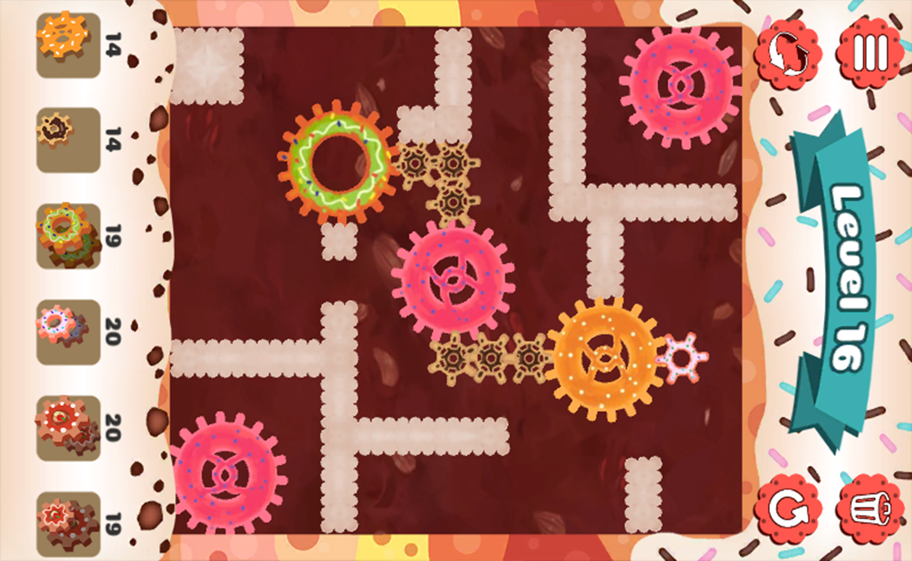

Job
Gameplay/Tools Programmer.
Concept
Combine de délicieuses pâtisseries dans Pastry Factory pour créer d'alléchants mécanismes et réparer les machines à gâteaux !
Vous êtes le nouveau réparateur en chef du monde merveilleux des pâtisseries.
Faites tourner vos neurones pour remettre en marche les machines à gâteaux défectueuses et sauver le pays des sucreries.
Résolvez les différents casse-têtes qui vous sont proposés, utilisez les donuts, profiteroles et autres pâtisseries, évitez le glaçage glissant et le biscuit bloquant, et rejoignez enfin les pièces maîtresses de la machine.
Caractéristiques de Pastry Factory :
● Un jeu de réflexion vous permettant de créer de savoureux mécanismes.
● Plus de 20 niveaux à vous en lécher les babines.
● Résolvez des énigmes en utilisant les deux surfaces de jeu.
● Un jeu amusant et facile à prendre en main, mais qui vous réserve de nombreux challenges.
Team
GA :
Maxime Bak
Valentin Besson
Laura Chan
LD :
Corentin Mangé
GD :
Valentin Capitaine
Isabelle Lallemand
Moteur
Unity.